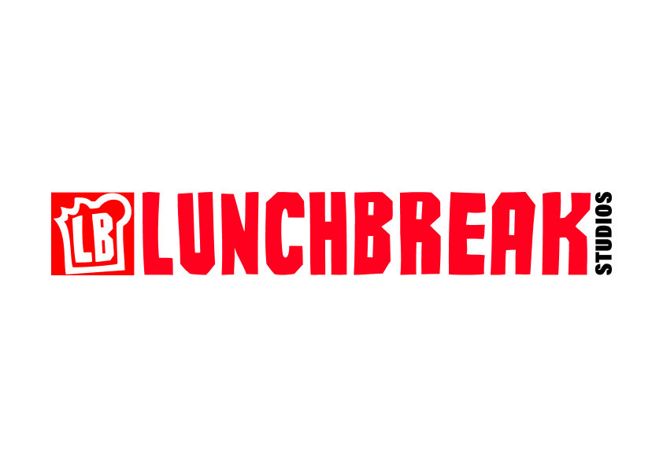
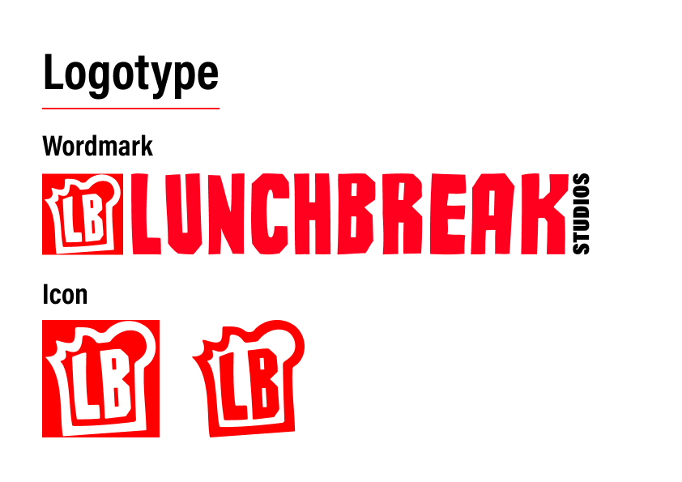
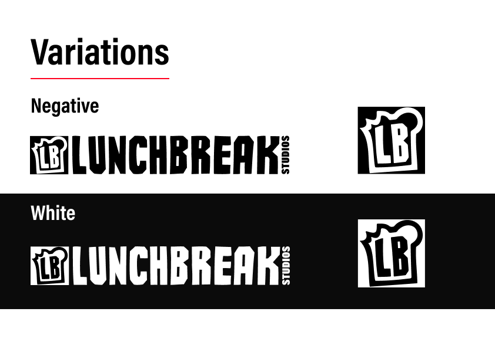
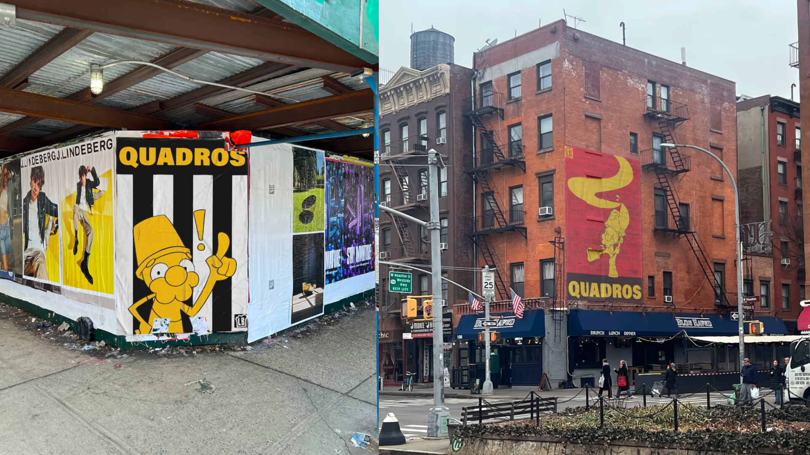
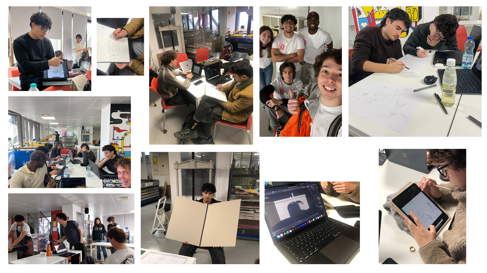

Branding — Video Editing — 2025
The Lunchbreak Studios project was our team for our 2nd Year project. The overall goal consisted in creating a videomapping experience highlighting our University’s departing campus.

My role in the project consisted in creating a strong, bold, yet playful brand that really embodied the personality of the individuals in our group as a collective. Additionally to this, I created poster assets and created a video trailer for our final videomapping product.
For the branding element of my work, I created a brandbook that outlined the entire brand’s visual identity.




The video trailer cut for the final videomapping product.